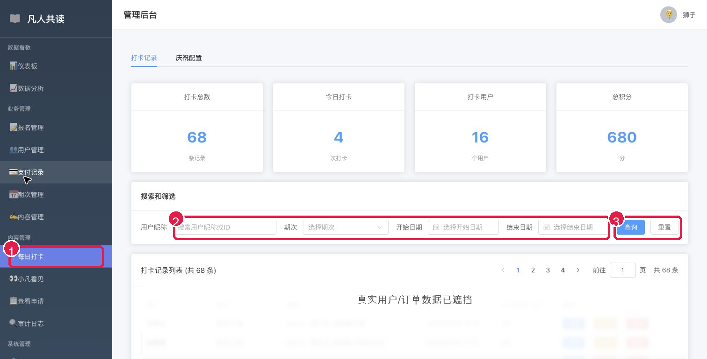
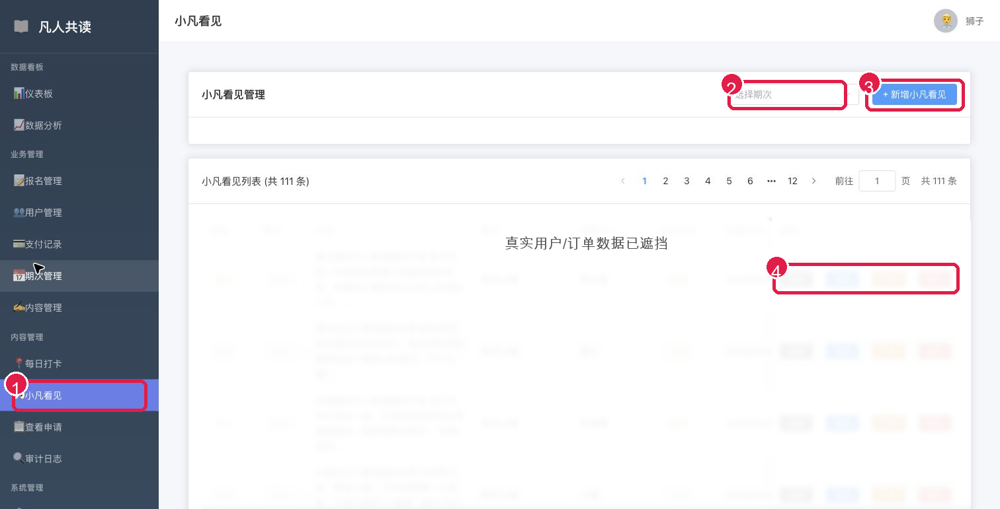
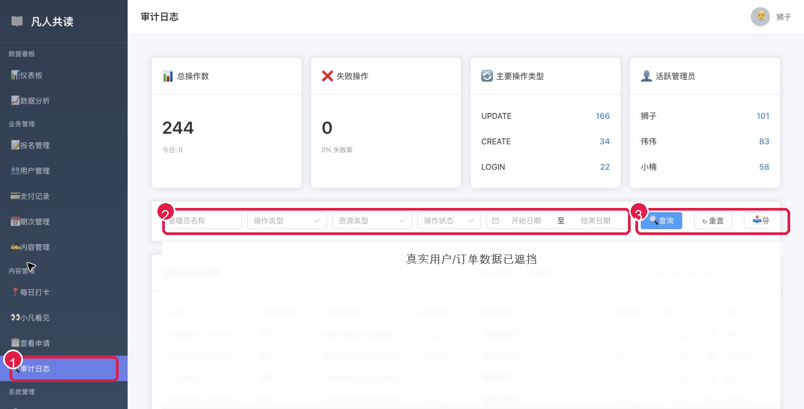
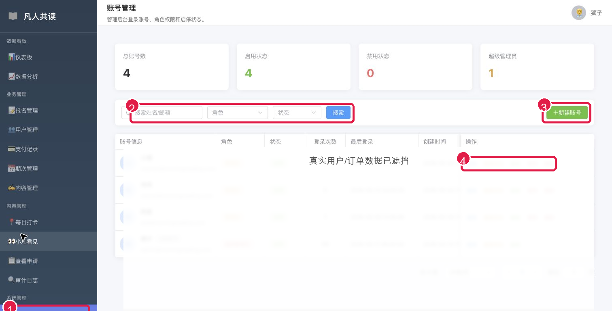
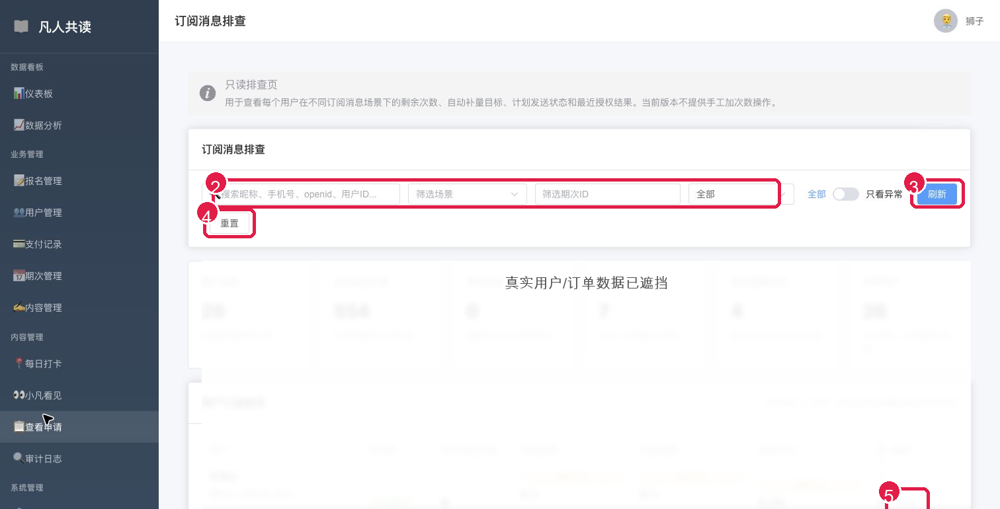
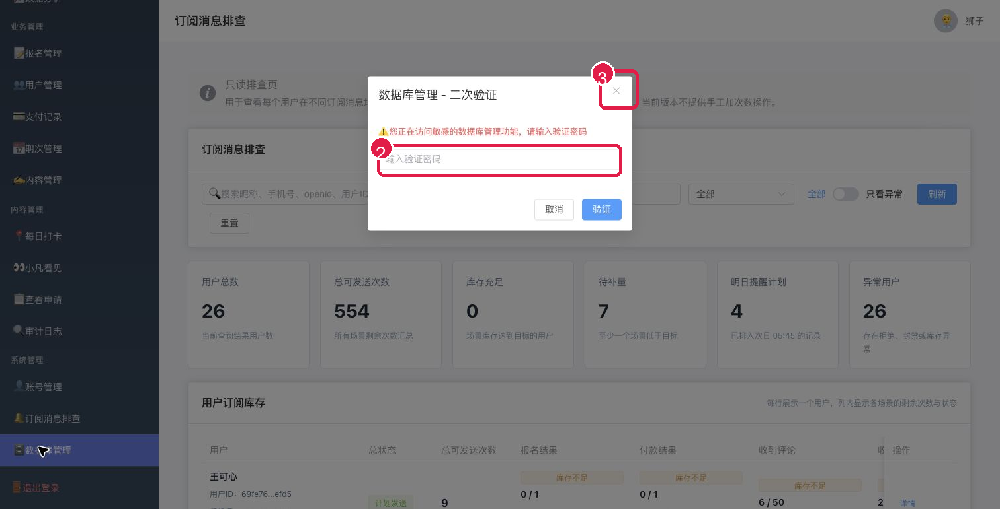

凡人共读管理员操作指南
围绕后台左侧侧边栏全部功能整理，适合新管理员上手。
基于 https://wx.shubai01.com/admin/ · 生成日期：2026-05-15
截图中的红色编号对应说明；真实用户、订单号、openid 等敏感数据已遮挡。
5分钟上手流程
- 进入后台后先看左侧菜单，确认自己要处理的是数据、业务、内容还是系统问题。
- 需要查找记录时，先输入关键词，再选择状态、期次、日期等筛选条件，最后点击查询或搜索。
- 需要新增内容时，先确认所属期次，再点击新增按钮。
- 需要编辑、下架、删除、批量同意或重置状态时，先核对对象，再执行操作。
- 数据库管理、账号权限、删除类操作属于高风险操作，没有明确授权不要继续。
安全提醒
不要在未确认的情况下点击删除、重置、批量同意/拒绝、数据库初始化等操作。数据库管理入口只在负责人明确授权时使用。
左侧菜单速查
| 区域 | 包含菜单 | 什么时候用 |
|---|---|---|
| 数据看板 | 仪表板、数据分析 | 看总体数据、趋势和异常 |
| 业务管理 | 报名管理、用户管理、支付记录、期次管理 | 处理报名、用户、订单和期次 |
| 内容管理 | 内容管理、每日打卡、小凡看见、查看申请、审计日志 | 维护课程内容、打卡、展示申请并追踪操作记录 |
| 系统管理 | 账号管理、订阅消息排查、数据库管理 | 管理后台账号、排查订阅消息、高风险数据库入口 |
1. 仪表板
用途：用来快速判断今天后台有没有需要处理的事项。
操作流程
- 先看总用户数、报名数、支付额、活跃期次等总览。
- 再看“待处理事项”，确认是否有待审批、待支付或需要关注的活跃行为。
- 如果要看明细，点“查看全部”进入对应列表。
注意：这里只适合看概况，具体处理仍要进入对应功能页。
截图编号说明
- 1 左侧菜单：进入各功能页
- 2 关键业务数字：先看当前总体情况
- 3 查看全部：进入对应列表页追踪明细

红色编号对应本节说明，部分真实数据已遮挡。
2. 数据分析
用途：用来按时间范围查看趋势、转化、收入和活跃度。
操作流程
- 选择开始日期和结束日期。
- 点击“刷新数据”。
- 查看趋势图、转化指标和收入结构，判断近期变化。
注意：分析页主要用于复盘，不建议把单个异常直接当成结论，要回到明细页核对。
截图编号说明
- 1 数据分析入口
- 2 选择开始/结束日期
- 3 刷新数据：按时间范围重算趋势

红色编号对应本节说明，部分真实数据已遮挡。
3. 报名管理
用途：用来查报名记录、确认报名状态、处理报名相关信息。
操作流程
- 在搜索框输入学员姓名或昵称。
- 按状态、期次继续缩小范围。
- 点击“搜索”查看结果。
- 需要批量修正展示名时，使用“同步报名名称到昵称”。
注意：同步类按钮会影响展示数据，执行前先确认筛选范围和操作目的。
截图编号说明
- 1 报名管理入口
- 2 输入姓名、状态、期次筛选
- 3 搜索：查报名记录
- 4 同步报名名称到昵称：批量修正展示名

红色编号对应本节说明，部分真实数据已遮挡。
4. 用户管理
用途：用来查看用户资料、角色和状态。
操作流程
- 输入昵称或邮箱。
- 按角色、状态筛选。
- 点击“搜索”定位用户，再查看用户相关信息。
注意：不要随意修改用户状态；涉及封禁、启用、权限变化时先确认原因。
截图编号说明
- 1 用户管理入口
- 2 按昵称/邮箱、角色、状态筛选用户
- 3 搜索：查看符合条件的用户

红色编号对应本节说明，部分真实数据已遮挡。
5. 支付记录
用途：用来查订单、支付状态、金额和支付时间。
操作流程
- 输入订单号或用户名。
- 按支付状态、时间筛选。
- 点击“刷新”重新加载列表。
- 需要看单笔订单时点“详情”。
注意：“重置待支付”属于状态修正操作，只在确认支付异常时使用。
截图编号说明
- 1 支付记录入口
- 2 按订单号/用户名、状态、日期筛选
- 3 刷新：重新加载支付列表
- 4 详情/重置待支付：先核实订单再操作

红色编号对应本节说明，部分真实数据已遮挡。
6. 期次管理
用途：用来创建、编辑、复制、删除读书营期次。
操作流程
- 点击“新建期次”创建新一期。
- 已有期次可点“编辑”调整名称、时间、状态等信息。
- 相似期次可用“复制”减少重复录入。
- 点“更新期次状态”可按规则刷新状态。
注意：删除期次前必须确认是否有关联报名、课程内容、打卡记录。
截图编号说明
- 1 期次管理入口
- 2 新建期次、刷新、更新期次状态
- 3 编辑/复制/删除：维护具体期次

红色编号对应本节说明，部分真实数据已遮挡。
7. 内容管理
用途：用来维护每个期次下的课程课节。
操作流程
- 先选择要管理的期次。
- 点击“新增课节”创建新的课程内容。
- 已有课节可“编辑”修改内容。
- 暂时不展示可“下架”，确认不用时才考虑删除。
注意：优先使用下架，谨慎删除；删除前确认小程序端不会再需要该内容。
截图编号说明
- 1 内容管理入口
- 2 先选择要管理的期次
- 3 新增课节：创建当天内容
- 4 编辑/下架/删除：维护课节

红色编号对应本节说明，部分真实数据已遮挡。
8. 每日打卡
用途：用来查看学员打卡情况。
操作流程
- 输入用户昵称或 ID。
- 选择期次和日期范围。
- 点击“查询”查看打卡记录。
- 筛选混乱时点击“重置”重新开始。
注意：打卡页通常用于查询和核对，不要把空结果直接理解为数据丢失，先检查筛选条件。
截图编号说明
- 1 每日打卡入口
- 2 输入用户、期次、日期条件
- 3 查询/重置：筛选打卡记录

红色编号对应本节说明，部分真实数据已遮挡。
9. 小凡看见
用途：用来管理“小凡看见”的展示内容。
操作流程
- 先选择所属期次。
- 点击“新增小凡看见”发布新内容。
- 列表中可查看、编辑、下架或删除已有内容。
注意：下架适合临时隐藏；删除是不可逆倾向操作，先确认内容不再需要。
截图编号说明
- 1 小凡看见入口
- 2 先选择所属期次
- 3 新增小凡看见：发布展示内容
- 4 查看/编辑/下架/删除：维护内容状态

红色编号对应本节说明，部分真实数据已遮挡。
10. 查看申请
用途：用来处理用户申请被“小凡看见”的记录。
操作流程
- 按状态筛选待处理、已同意或已拒绝。
- 输入申请者或被申请者搜索。
- 点击“查询”查看结果。
- 勾选记录后可批量同意、批量拒绝，或导出数据。
注意：批量同意/拒绝会影响用户展示权限，操作前要确认勾选对象。
截图编号说明
- 1 查看申请入口
- 2 按状态、申请者、被申请者筛选
- 3 查询/重置筛选条件
- 4 批量同意/拒绝、导出数据

红色编号对应本节说明，部分真实数据已遮挡。
11. 审计日志
用途：用来追踪后台管理员做过什么操作。
操作流程
- 按管理员、模块、动作、对象 ID、时间范围筛选。
- 点击“查询”定位日志。
- 需要留档时点击“导出”。
注意：排查问题时先看时间范围和操作者，避免在全量日志里盲找。
截图编号说明
- 1 审计日志入口
- 2 按管理员、模块、动作、对象、时间筛选
- 3 查询/重置/导出日志

红色编号对应本节说明，部分真实数据已遮挡。
12. 账号管理
用途：用来管理后台登录账号、角色权限和启停状态。
操作流程
- 输入姓名或邮箱搜索账号。
- 按角色、状态筛选。
- 点击“新建账号”添加管理员。
- 已有账号可编辑、重置密码、复制、禁用或删除。
注意：账号权限直接影响后台安全。新增、禁用、删除账号前要确认授权。
截图编号说明
- 1 账号管理入口
- 2 搜索姓名/邮箱并筛选角色、状态
- 3 新建账号：添加后台管理员
- 4 编辑/重置密码/复制/禁用/删除账号

红色编号对应本节说明，部分真实数据已遮挡。
13. 订阅消息排查
用途：只读查看用户订阅消息状态，排查为什么收不到提醒。
操作流程
- 输入昵称、手机号、openid 或用户 ID。
- 按期次 ID、状态筛选。
- 点击“刷新”或“详情”查看具体订阅状态。
注意：这是排查页，不负责直接修复用户授权。用户未授权时需要引导其在小程序端重新订阅。
截图编号说明
- 1 订阅消息排查入口
- 2 搜索用户、期次、订阅状态
- 3 刷新：重新读取排查数据
- 4 重置筛选条件
- 5 详情：查看某个用户的订阅状态

红色编号对应本节说明，部分真实数据已遮挡。
14. 数据库管理
用途：高风险维护入口，进入前需要验证密码。
操作流程
- 点击左侧“数据库管理”。
- 系统弹出验证密码框。
- 没有明确授权时，点击右上角关闭弹窗退出。
注意：严禁随意进入或执行初始化、清空、重置类操作；必须先获得负责人明确确认。
截图编号说明
- 1 数据库管理入口
- 2 需要输入验证密码才能继续
- 3 关闭弹窗：不进入高风险操作

红色编号对应本节说明，部分真实数据已遮挡。